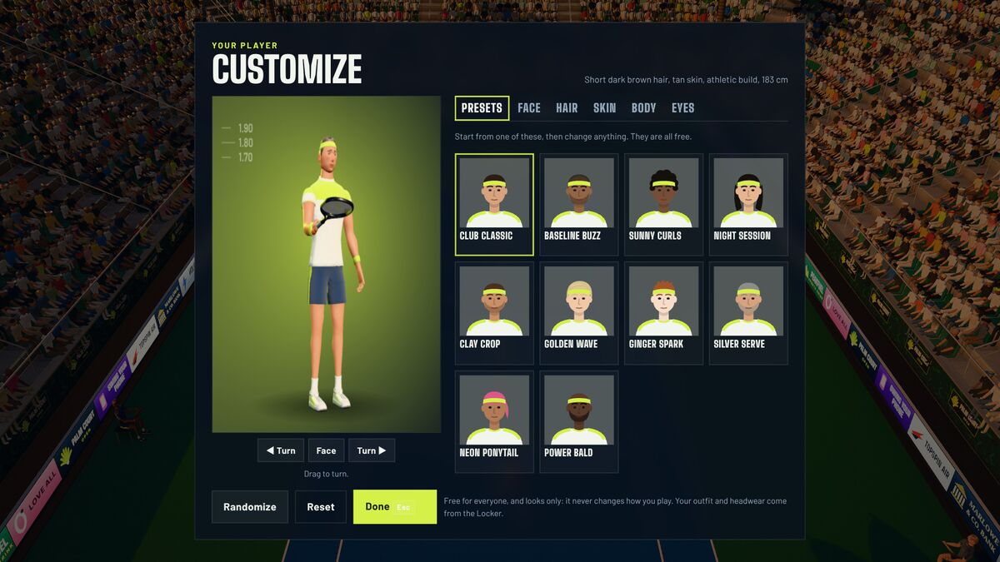

“Your player” is the figure you control when you are not playing as one of the five pros. The Customize player editor changes their body, face, hair and skin. It is free for everyone, from the first minute. Everything else you wear, the outfit, headwear, wristbands, racket paint and celebration, comes from the Store and the Locker and is earned with Fuzz (see levels, Fuzz and the Store), so the editor and the Locker together make the whole character.

The one rule: it is only looks
An appearance becomes a handful of drawing settings for the character and nothing more. No stat, no rating, no CPU level and no part of online balance ever reads it. Height and build are the clearest example: they change how the figure is drawn, but your speed, power, control and reach come from your gear and the pro you pick, not from the body you drew. That is a deliberate promise, and it is why the editor can be completely free. The names of the options are plain descriptions with no gendered words, and the presets are invented looks, never anyone’s likeness.
How to open it, and what to expect
Open the Locker tab and choose the portrait, or use the “You play as” line on the Match setup page (Play, Training, Quick Match vs CPU), which has a Change in the Locker link. The editor is a screen of its own with a large live 3D preview of your player holding a racket. Drag the preview to turn it, press the Turn buttons, or use the arrow keys while it has focus; the Face button zooms to the face. On the lowest graphics setting, or without a graphics card, the preview is a flat portrait that does not turn, but every control still works.
Changes show at once and are saved as you go: there is nothing to confirm. Randomize makes a new look (faces stay near the middle, dyed hair is rare and most people are clean-shaven), Reset returns to the starting look, and Done (or Esc) closes it. The screen is made of ordinary buttons, sliders and choices, so the keyboard and a controller work: the arrows or the D-pad move between controls, left and right change a slider, and B or Esc is Done. A line above the preview describes the figure in words, such as “Short dark brown hair, tan skin, athletic build, 183 cm”, which is also what a screen reader hears.
The six tabs
| Tab | What you choose |
|---|---|
| Presets | Ten starting looks. Pick one, then change anything. |
| Face | Six sliders, nine steps each: jaw, cheekbones, nose, brow, chin and eye size. The ranges are narrow on purpose, so every step looks like a person and none breaks the hairline or a headband. |
| Hair | Nine styles (short, buzz, ponytail, crop, textured, curly, wavy, long and bald), twelve colours (eight natural and four dyed: blue, pink, green and violet) and four levels of facial hair, from none to a full beard. |
| Skin | Ten tones, from very light to deepest. |
| Body | Height from 170 to 195 cm, and three builds: slim, athletic and strong. |
| Eyes | Seven colours: dark brown, brown, hazel, green, blue, grey and amber. |
The ten presets are Club Classic (the look you start with), Baseline Buzz, Sunny Curls, Night Session, Clay Crop, Golden Wave, Ginger Spark, Silver Serve, Neon Ponytail and Power Bald. They are a quick way to see the range: a tall slim player with long dark hair, a short quick one with a pink ponytail, a strong bald one built for a big serve.
Where your look shows up
- Matches against the CPU, as “Your player”. Your figure is the one on court, wearing whatever outfit and headwear you have equipped.
- Not when you play as a pro. A pro always keeps their own face and body: you get their look and their strengths, and your racket paint and celebration come along (see the pro play-style guide for what the strengths are).
- Online. Your look travels to the other player as a short 14-character code, along with your name, so a friend sees your figure rather than a default one. An older copy of the game, or a code it does not understand, simply shows the standard look. See the online play guide.
What the editor does not do
- It does not choose your hand. Plays (right or left) is in Settings, Gameplay, and the figure follows it.
- It does not set your name. That is under the Locker, and the privacy policy asks you not to use your real name on a public board.
- It does not touch clothes or rackets. Those are separate slots in the Locker with their own unlock levels.
A short walkthrough
- Start from a preset that is near what you want. Presets are the fastest way to a coherent figure, because the face, hair and build were chosen to go together.
- Change Skin and Hair first. They are the biggest visible changes and they are what other people recognise from a distance.
- Use the Face sliders for small adjustments. Each slider moves one feature a little (the sliders run from about 12 percent below the default to 12 percent above), so combine two or three rather than pushing one to the end.
- Check the figure from the side and from behind with Turn: the camera behind your player is the one you see most in a match.
- Press Done. You can come back at any time.
Questions people ask
- Can I make someone I know? You can make a look that resembles anyone, but the game ships no real person’s likeness and the presets are all invented. The five pros are fictional characters with parody names, and the game is not connected to any real player.
- Do the five pros have a range of looks to compare with? Yes. They run from 1.83 m to 1.91 m, with different builds, hair and skin, and your own figure can be anywhere from 170 to 195 cm, so you will not look out of place beside them.
- Is it a lot to carry online? No. The whole appearance is thirteen choices, packed into a 14-character code. Clothes, rackets and gear are not part of it.
- Does a new look cost anything? No Fuzz, no level and no limit on how often you change it.
Keeping and moving your look
Your appearance is part of your saved profile, so it is kept with your progress, in the online backup, and in a save file you export. If you move to another device, the look comes with the save: see the save and devices guide. There is no limit on how often you change it and nothing to unlock, so try several. A good test is to pick a look that is easy to read against the pros: a strong colour in your outfit helps more than a hairstyle when you are a small figure on a big court.